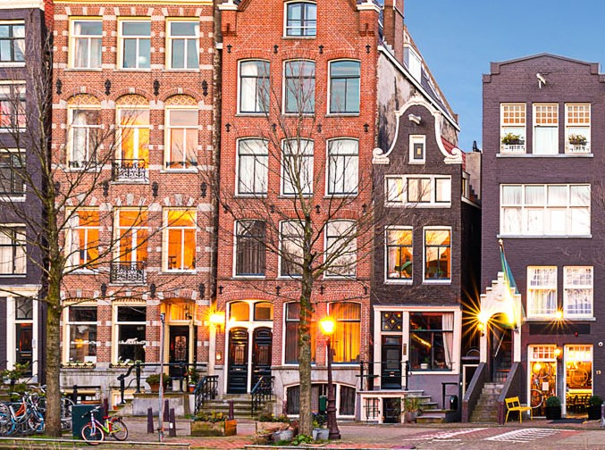

Amsterdam
France
America
Lesotho

AMSTERDAM
Amsterdam was founded at the Amstel, that was dammed to control flooding; the city's name derives from the Amstel dam. Originating as a small fishing village in the late 12th century, Amsterdam became one of the most important ports in the world.
FRANCE
In the Middle Ages, France was powerful but highly decentralised feudal kingdom in which the king's authority was barely felt. King Augustus achieved remarkable success the expansion of his realm, defeating his rivals and doubling its size.

AMERICA
The United States is a federal republic and a representative democracy with three separate branches of government, including a bicameral legislature. It is a founding member of the United Nations, NATO, and other organizations.
LESOTHO
Lesotho was previously the British Crown Colony of Basutoland, but it declared independence from the United Kingdom. It is now state and is a member of the United Nations. The name Lesotho roughly translates to "land of the Sotho"